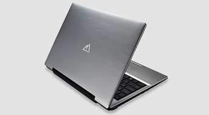

Hace algún tiempo, en Mayo del 2014, compré un portatil a la empresa Mountain, en concreto el Mountain Nickel 10, un portátil de 14" con procesador Core i5 4310M Mobile a 2.7 GHz, equipo del que estoy muy contento. Mountain es una empresa española conocida por montar sus equipos en España y por fabricar productos de gran calidad.

Tengo instalado un sistema operativo Linux, en concreto una Elementary OS, distribución basada en Ubuntu y me encontré con que parte del hardware es demasiado moderno para la versión del kernel incluída por defecto.
No me funcionan los siguientes dispositivos:
- La tarjeta de red Wifi, una Intel Wireless N7260
- El lector de tarjetas SD, con chipset Realtek 5287
Seguir leyendo ...